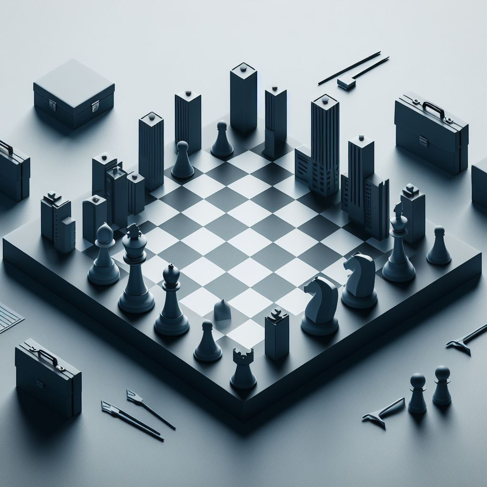
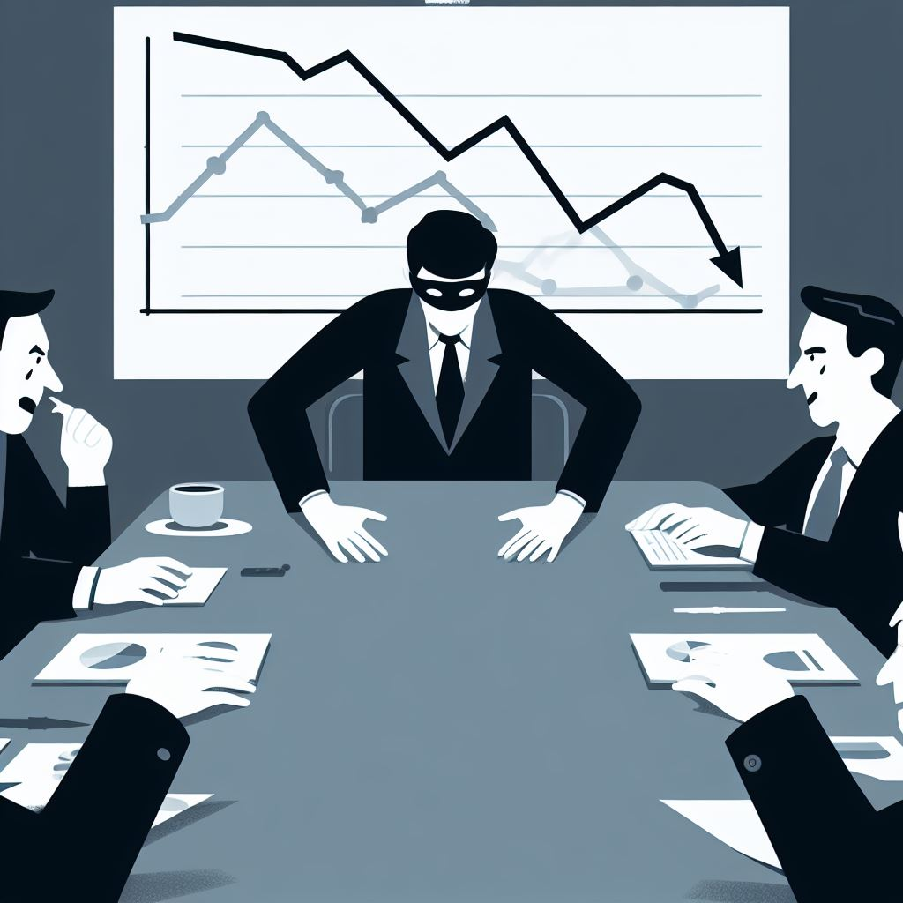

Objectif
À partir d'un capital initial, votre but est de construire une entreprise afin d'être le premier à multiplier votre investissement. Les joueurs incarnent les PDG de sociétés rivales, construisant leur empire tout en se livrant à l'espionnage industriel.
Composants
- Stylo et Papier : Pour suivre les ressources, les départements et les actions.
- Un Jeu de Cartes Modifié : Utilisez uniquement les cartes à figure (A, R, D, V) et deux Jokers. Ce sont les cartes "Action Spéciale".
- Dés à 6 Faces : Pour introduire des éléments de hasard et d'incertitude. Plus il y a de dés, mieux c'est.
- Jetons de trois sortes : pour symboliser les Produits, les Employés et les Dollars.
Configuration
- Chaque joueur commence avec :
- 3 jetons Employé
- Une main de 2 cartes Action Spéciale tirées du jeu modifié.
- 10 jetons dollar
- Les joueurs ont quatre départements : Recherche, RH, Production et Ventes. Ceux-ci peuvent être dessinés comme des rectangles sur une feuille de papier.
- Déterminez le premier joueur par un tirage au sort ou une autre méthode équitable.
Structure du Tour
Chaque tour est composé de quatre phases :
-
Phase d'Affectation
- Les joueurs répartissent leurs jetons Employé disponibles entre les différents départements.
- Note : Un jeton Employé ne peut pas être partagé entre plusieurs départements.
-
Phase d'Action
- Les joueurs peuvent jouer autant de cartes Actions Spéciales qu'ils le souhaitent depuis leur main.
- Cela inclut la possibilité de jouer une carte "Espionnage", qui — si réussie — perturbe un département choisi dans la compagnie adverse pour le tour en cours. (Voir la section sur l'Espionnage pour plus de détails.)
-
Phase d'Exécution
- Lancez un dé pour déterminer la demande globale du marché pour le tour en cours. Ajoutez 2 pour chaque carte "Étude de Marché" en jeu.
- Pour chaque département où ils ont des jetons Employé, les joueurs lancent un dé à 6 faces par employé :
- Production : Sur un 4-6, obtenez un jeton Produit.
- Recherche : Sur un 4-6, piochez une carte Action Spéciale. S'il n'y a plus de carte dans la pile, la défausse est mélangée et devient la nouvelle pile.
- RH : Sur un 4-6, obtenez un nouveau jeton Employé, si désiré.
- Ventes : Sur un 4-6, vendez un produit pour 3 jetons Dollar, jusqu'à la demande globale du marché. Par exemple, si la demande est de 2, chaque joueur peut vendre au maximum deux produits. Les produits vendus sont retirés du jeu.
- Lorsqu'une carte "Méthodes Améliorées" est placée sur un département, ce dernier est amélioré, abaissant le seuil de réussite du lancer de dé (de 4-6 à 3-6, de 3-6 à 2-6, etc.).
-
Phase de Maintenance Économique
- Les joueurs doivent payer 1 jeton Dollar pour 3 Employés pour les frais de maintenance.
- Les joueurs doivent payer 1 jeton Dollar pour 6 Produits qu'ils possèdent pour les frais de stockage.
- Si un joueur ne peut pas assumer les coûts de maintenance pour tous ses employés, il doit en licencier un.
- Les joueurs peuvent licencier autant d'employés qu'ils le souhaitent.
- À la fin du tour, les joueurs peuvent avoir un maximum de 5 cartes dans leur main. Ils défaussent toute carte supplémentaire de leur choix.
Cartes Actions Spéciales
- Espionnage (Joker): Perturbe un département choisi dans la compagnie adverse pour un tour. Défaussez après utilisation.
- Reconversion (Reine): Réaffecte un employé à un autre département de façon permanente. Défaussez après utilisation.
- Boost d'Innovation (Roi): Double la production du département de votre choix pour un tour. Placez cette carte face visible sur le département amélioré. Défaussez après utilisation.
- Méthodes Améliorées (As): Améliore un département, rendant les lancers de réussite plus faciles (voir phase d'exécution). Peut être cumulé. Placez cette carte face visible sur le département amélioré.
- Étude de Marché (J): Lorsqu'elle est jouée, ajoute 2 en permanence à la demande globale (voir phase d'exécution). Placez cette carte face visible au centre du plateau.
Espionnage
- Les joueurs peuvent prétendre avoir une carte Espionnage, même s'ils n'en ont pas.
- Pour jouer Espionnage, placez une carte face cachée sur un département de votre adversaire.
- Le joueur ciblé peut soit appeler le bluff, soit accepter le sabotage. S'il accepte, le sabotage est réussi et la carte face cachée est défaussée.
- Si un bluff est appelé, la carte est révélée :
- S'il s'agit d'une carte Espionnage, le défenseur perd un jeton Employé dans le département ciblé et le sabotage est réussi.
- S'il ne s'agit pas d'une carte Espionnage, l'attaquant lance un dé et perd cette somme d'argent. S'il ne peut pas payer, il perd un jeton Employé.
Condition de Victoire
La partie se termine lorsqu'un joueur a plus de 30 dollars à la fin d'un tour, après avoir payé ses employés. Le joueur avec le plus de jetons Dollar gagne.